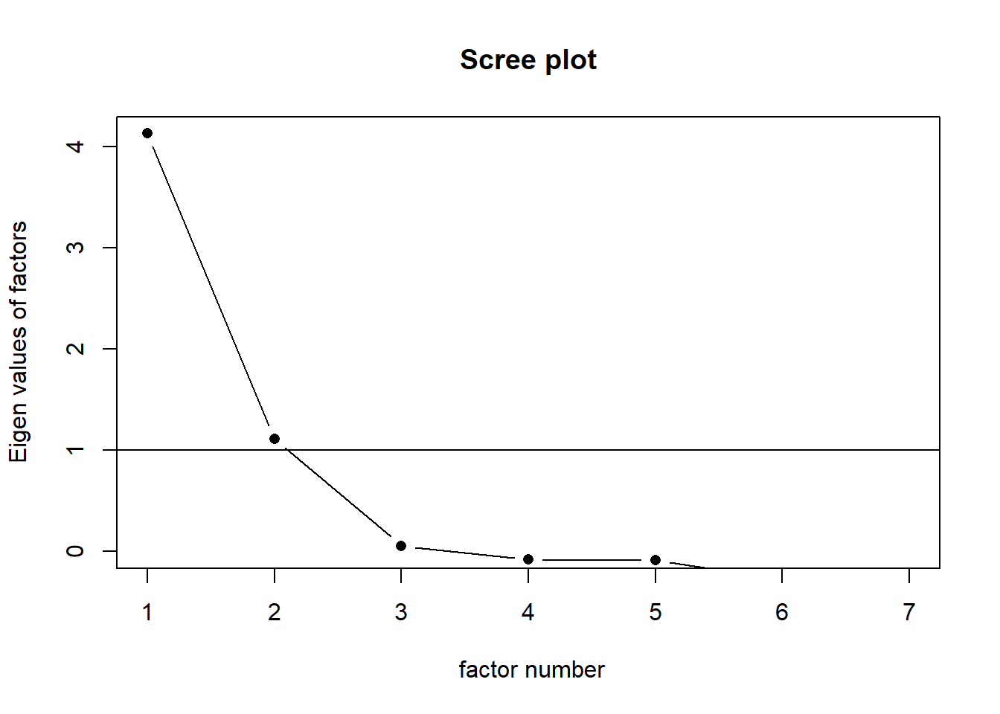
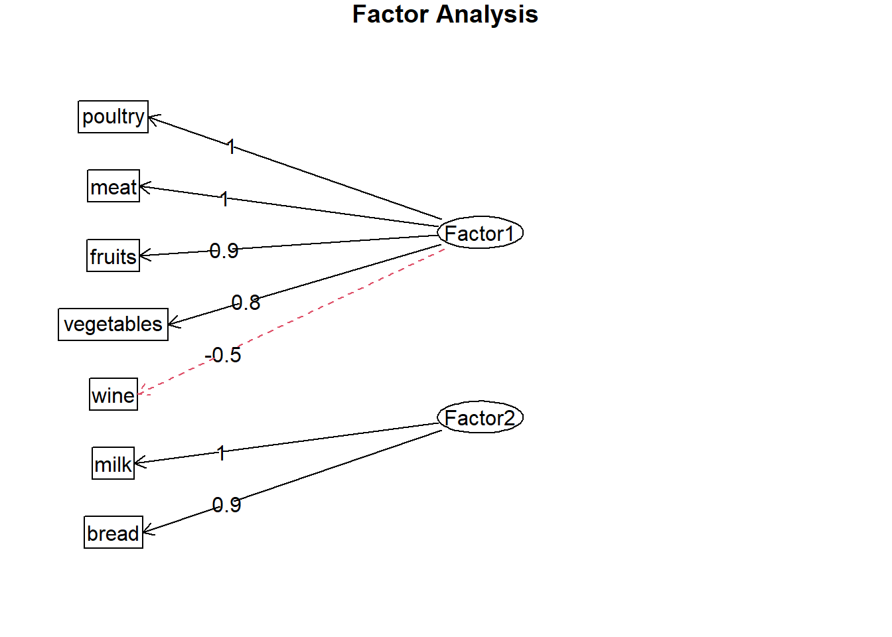
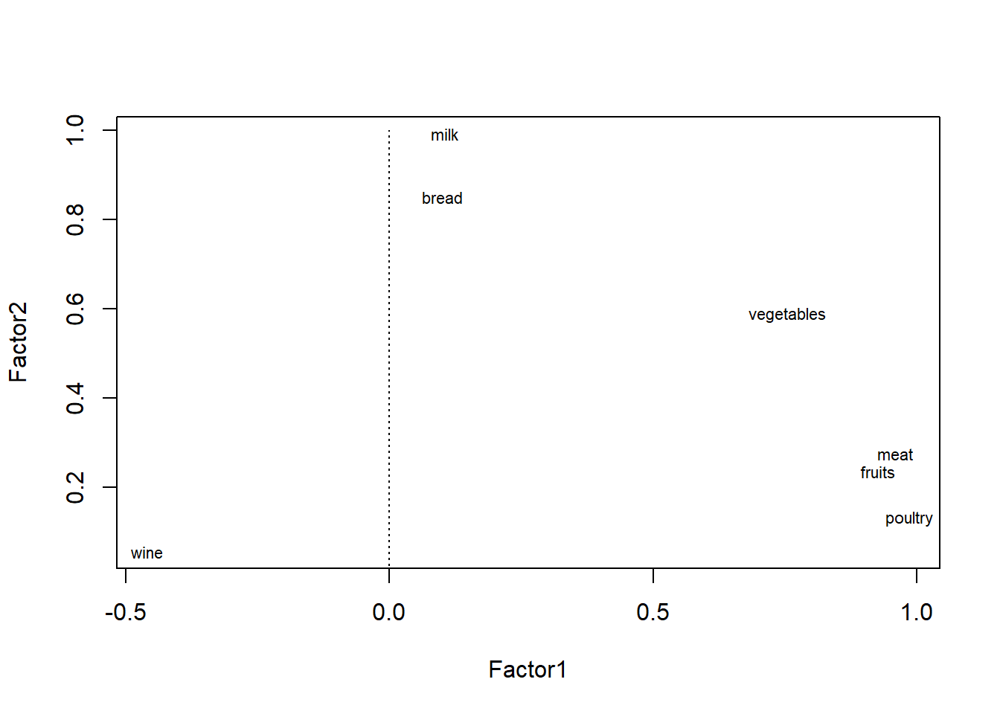
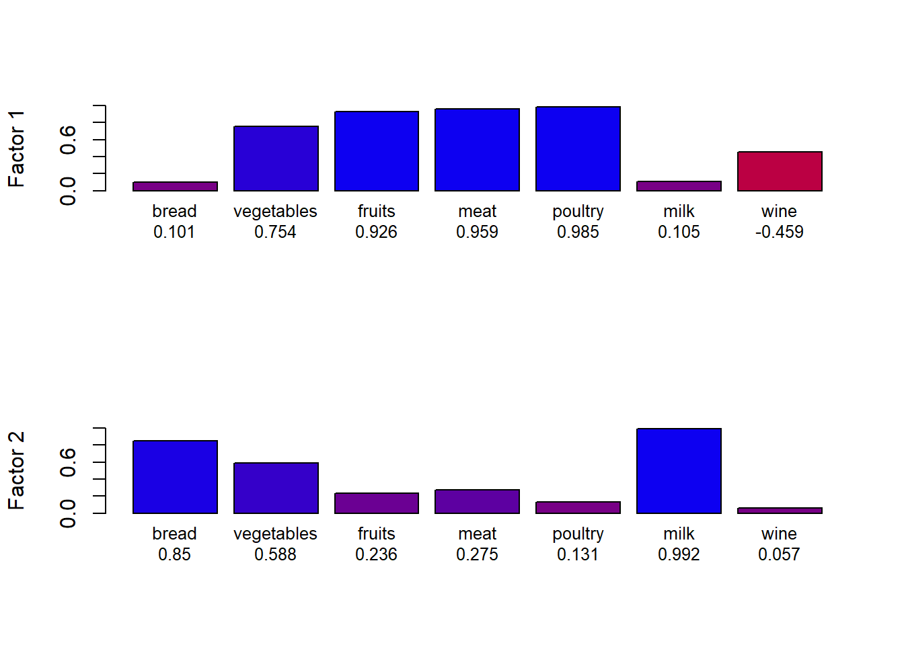
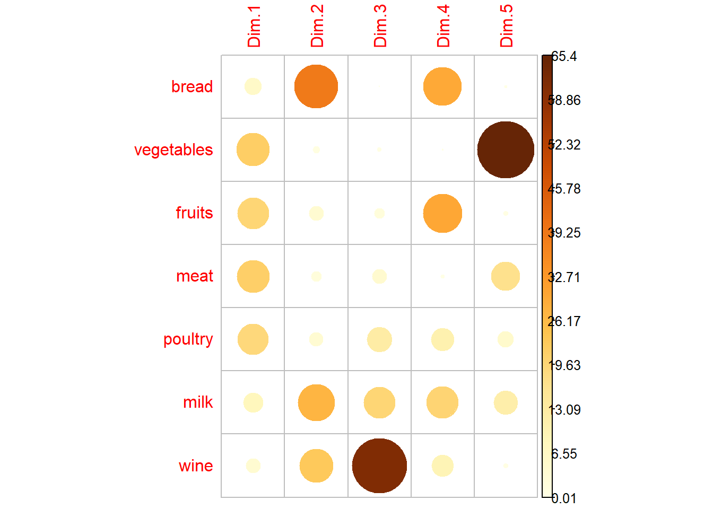

Import Data and pacakge
install.packages(pkgs="http://www.karlin.mff.cuni.cz/~hlavka/sms2/SMSdata_1.0.tar.gz", repos=NULL, type="source")## Installation du package dans 'C:/Users/guill/OneDrive/Documents/R/win-library/4.1'
## (car 'lib' n'est pas spécifié)library(SMSdata)
data(food)
library("FactoMineR")## Warning: le package 'FactoMineR' a été compilé avec la version R 4.1.3library("factoextra")## Warning: le package 'factoextra' a été compilé avec la version R 4.1.3## Le chargement a nécessité le package : ggplot2## Welcome! Want to learn more? See two factoextra-related books at https://goo.gl/ve3WBalibrary("qgraph")## Warning: le package 'qgraph' a été compilé avec la version R 4.1.3library(corrplot)## corrplot 0.92 loadedlibrary(tidyverse)## Warning: le package 'tidyverse' a été compilé avec la version R 4.1.3## -- Attaching packages --------------------------------------- tidyverse 1.3.1 --## v tibble 3.1.6 v dplyr 1.0.8
## v tidyr 1.2.0 v stringr 1.4.0
## v readr 2.1.2 v forcats 0.5.1
## v purrr 0.3.4## Warning: le package 'readr' a été compilé avec la version R 4.1.3## Warning: le package 'forcats' a été compilé avec la version R 4.1.3## -- Conflicts ------------------------------------------ tidyverse_conflicts() --
## x dplyr::filter() masks stats::filter()
## x dplyr::lag() masks stats::lag()library(psych)## Warning: le package 'psych' a été compilé avec la version R 4.1.3##
## Attachement du package : 'psych'## Les objets suivants sont masqués depuis 'package:ggplot2':
##
## %+%, alphaEvaluate the correlation matrix
library(RcmdrMisc)## Warning: le package 'RcmdrMisc' a été compilé avec la version R 4.1.3## Le chargement a nécessité le package : car## Le chargement a nécessité le package : carData##
## Attachement du package : 'car'## L'objet suivant est masqué depuis 'package:psych':
##
## logit## L'objet suivant est masqué depuis 'package:dplyr':
##
## recode## L'objet suivant est masqué depuis 'package:purrr':
##
## some## Le chargement a nécessité le package : sandwich## Warning: le package 'sandwich' a été compilé avec la version R 4.1.3##
## Attachement du package : 'RcmdrMisc'## L'objet suivant est masqué depuis 'package:psych':
##
## reliabilityrcorr.adjust(food) # This function is build into R Commander.##
## Pearson correlations:
## bread vegetables fruits meat poultry milk wine
## bread 1.0000 0.5931 0.1961 0.3213 0.2480 0.8556 0.3038
## vegetables 0.5931 1.0000 0.8563 0.8811 0.8268 0.6628 -0.3565
## fruits 0.1961 0.8563 1.0000 0.9595 0.9255 0.3322 -0.4863
## meat 0.3213 0.8811 0.9595 1.0000 0.9818 0.3746 -0.4372
## poultry 0.2480 0.8268 0.9255 0.9818 1.0000 0.2329 -0.4002
## milk 0.8556 0.6628 0.3322 0.3746 0.2329 1.0000 0.0069
## wine 0.3038 -0.3565 -0.4863 -0.4372 -0.4002 0.0069 1.0000
##
## Number of observations: 12
##
## Pairwise two-sided p-values:
## bread vegetables fruits meat poultry milk wine
## bread 0.0421 0.5412 0.3086 0.4370 0.0004 0.3371
## vegetables 0.0421 0.0004 0.0002 0.0009 0.0188 0.2554
## fruits 0.5412 0.0004 <.0001 <.0001 0.2915 0.1089
## meat 0.3086 0.0002 <.0001 <.0001 0.2303 0.1552
## poultry 0.4370 0.0009 <.0001 <.0001 0.4663 0.1974
## milk 0.0004 0.0188 0.2915 0.2303 0.4663 0.9831
## wine 0.3371 0.2554 0.1089 0.1552 0.1974 0.9831
##
## Adjusted p-values (Holm's method)
## bread vegetables fruits meat poultry milk wine
## bread 0.5471 1.0000 1.0000 1.0000 0.0064 1.0000
## vegetables 0.5471 0.0064 0.0028 0.0137 0.2635 1.0000
## fruits 1.0000 0.0064 <.0001 0.0003 1.0000 1.0000
## meat 1.0000 0.0028 <.0001 <.0001 1.0000 1.0000
## poultry 1.0000 0.0137 0.0003 <.0001 1.0000 1.0000
## milk 0.0064 0.2635 1.0000 1.0000 1.0000 1.0000
## wine 1.0000 1.0000 1.0000 1.0000 1.0000 1.0000KMO Test (Kaiser-Meyer-Olkin)
library(psych)
KMO(food)## Kaiser-Meyer-Olkin factor adequacy
## Call: KMO(r = food)
## Overall MSA = 0.46
## MSA for each item =
## bread vegetables fruits meat poultry milk wine
## 0.55 0.51 0.50 0.48 0.46 0.39 0.25The Kaiser–Meyer–Olkin (KMO) test is a statistical measure to determine how suited data is for factor analysis.
Factor analysis does not seem to be very suitable for our data.
scree(food, pc=FALSE) # Use pc=FALSE for factor analysis## Warning in fa.stats(r = r, f = f, phi = phi, n.obs = n.obs, np.obs = np.obs, :
## The estimated weights for the factor scores are probably incorrect. Try a
## different factor score estimation method. Two axes will be chosen to explain FA.
Realisation FA
fa.food <- factanal(food, factors = 2, rotation="varimax") #factor = 2 : number axis.
print(fa.food, digits=2, cutoff=.6, sort=TRUE)##
## Call:
## factanal(x = food, factors = 2, rotation = "varimax")
##
## Uniquenesses:
## bread vegetables fruits meat poultry milk wine
## 0.27 0.09 0.09 0.00 0.01 0.00 0.79
##
## Loadings:
## Factor1 Factor2
## vegetables 0.75
## fruits 0.93
## meat 0.96
## poultry 0.99
## bread 0.85
## milk 0.99
## wine
##
## Factor1 Factor2
## SS loadings 3.55 2.20
## Proportion Var 0.51 0.31
## Cumulative Var 0.51 0.82
##
## Test of the hypothesis that 2 factors are sufficient.
## The chi square statistic is 23.27 on 8 degrees of freedom.
## The p-value is 0.00303library(psych)
loads <- fa.food$loadings
fa.diagram(loads) axis 1 : poultry / meat / fruits / vegetables / (wine..)
axis 2 : Milk / bread
load <- fa.food$loadings[,1:2]
plot(load,type="n")
text(load,labels=names(food),cex=.7)
lines(c(-1,1),c(0,0), lty = 3)
lines(c(0,0),c(-1,1), lty = 3)
rbPal <- colorRampPalette(c('red','blue'))
loadings <- data.frame(fa.food$loadings[,1:2])
loadings$colF1 <- rbPal(20)[as.numeric(cut(loadings[,1],breaks = seq(-1,1,length = 20)))]
loadings$nam1 <- paste(row.names(loadings), round(loadings[,1], digits = 3), sep = "\n")
loadings$colF2 <- rbPal(20)[as.numeric(cut(loadings[,2],breaks = seq(-1,1,length = 20)))]
loadings$nam2 <- paste(row.names(loadings), round(loadings[,2], digits = 3), sep = "\n")
par(mfrow = c(2,1))
barplot(abs(loadings[,1]), col = loadings$colF1, ylim = c(0,1), ylab = "Factor 1", names.arg = loadings$nam1, cex.names = 0.8)
barplot(abs(loadings[,2]), col = loadings$colF2, ylim = c(0,1), ylab = "Factor 2", names.arg = loadings$nam2, cex.names = 0.8) representation of each variable on each axis
round(fa.food$loadings, 3)##
## Loadings:
## Factor1 Factor2
## bread 0.101 0.850
## vegetables 0.754 0.588
## fruits 0.926 0.236
## meat 0.959 0.275
## poultry 0.985 0.131
## milk 0.105 0.992
## wine -0.459
##
## Factor1 Factor2
## SS loadings 3.548 2.204
## Proportion Var 0.507 0.315
## Cumulative Var 0.507 0.822Comparaison with PCA :
During the PCA we also noticed that it was necessary to keep just 2 axes.
Resultat :
res<-PCA(food, scale.unit = TRUE, ncp = 5, graph = F)
var <- get_pca_var(res)
corrplot(var$contrib, is.corr=FALSE)
This graph shows that the important variables for each axis are the same for PCA and FA.